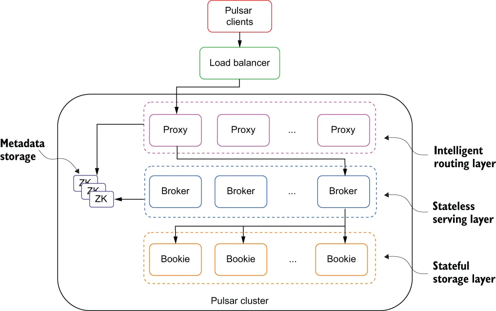

Apache Pulsar是一个云原生企业级的发布订阅(pub-sub)消息系统，最初由Yahoo开发，并于2016年底开源，现在是Apache软件基金会顶级开源项目。Pulsar在Yahoo的生产环境运行了三年多，助力Yahoo的主要应用，如Yahoo Mail、Yahoo Finance、Yahoo Sports、F1ickr、Gemini广告平台和Yahoo分布式键值存储系统Sherpa。
Apache Pulsar的功能与特性：
1. 多租户模式
1. 租户和命名空间(namespace)是Pulsar支持多租户的两个核心概念。
2. 在租户级别，Pulsar为特定的租户预留合适的存储空间、应用授权与认证机制。
3. 在命名空间级别，Pulsar有一系列的配置策略(policy),包括存储配额、流控、消息过期策略和命名空间之间的隔离策略。
